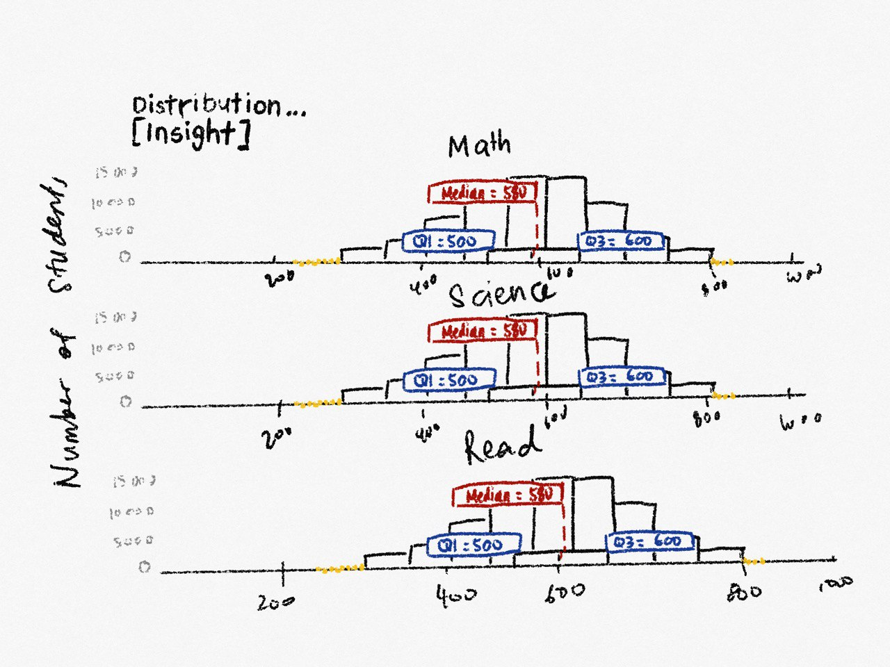
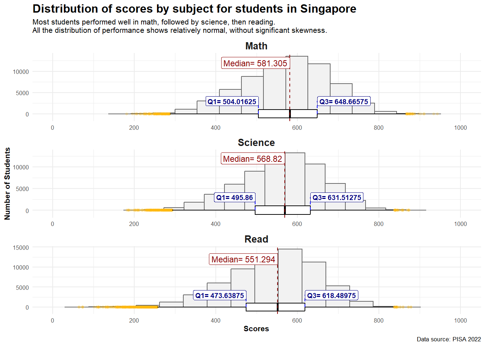
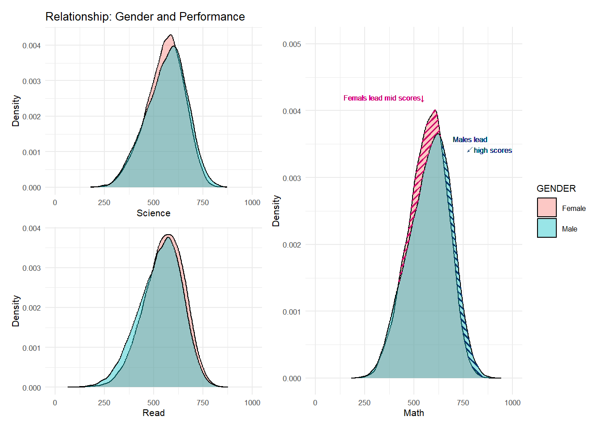
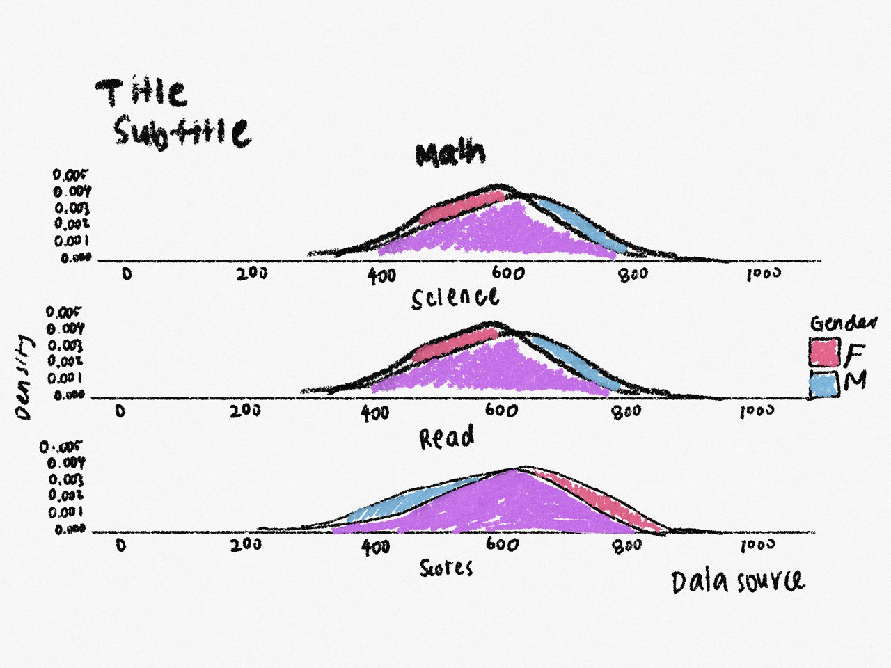
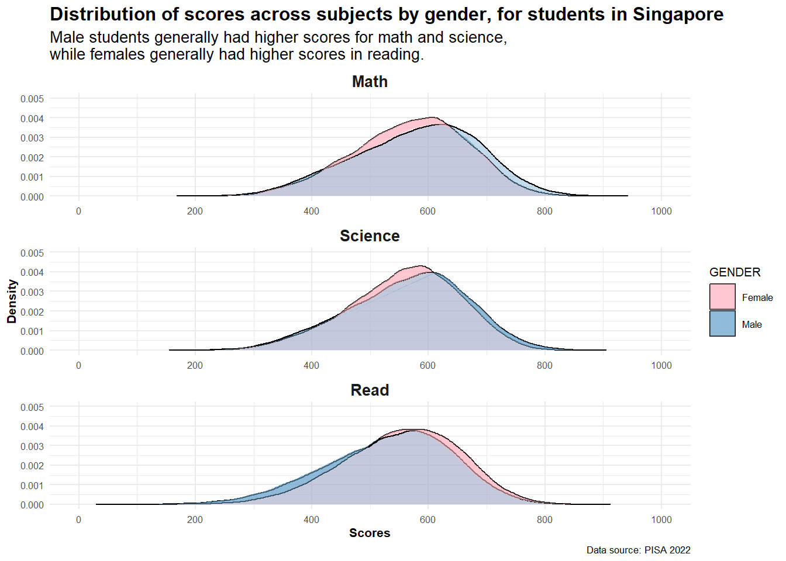
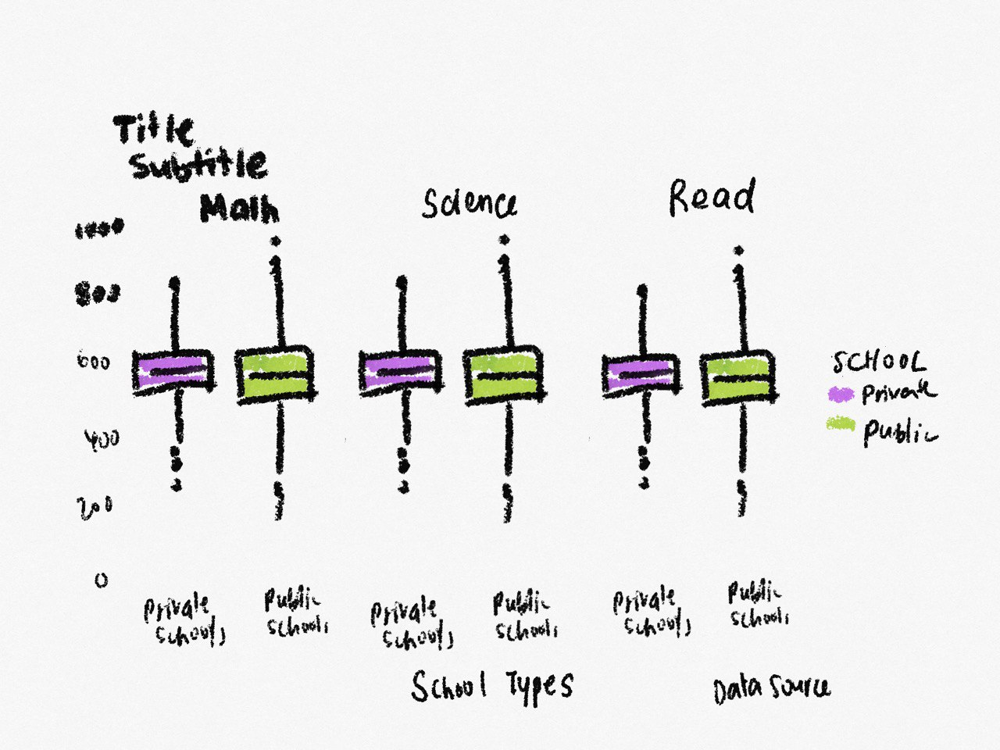
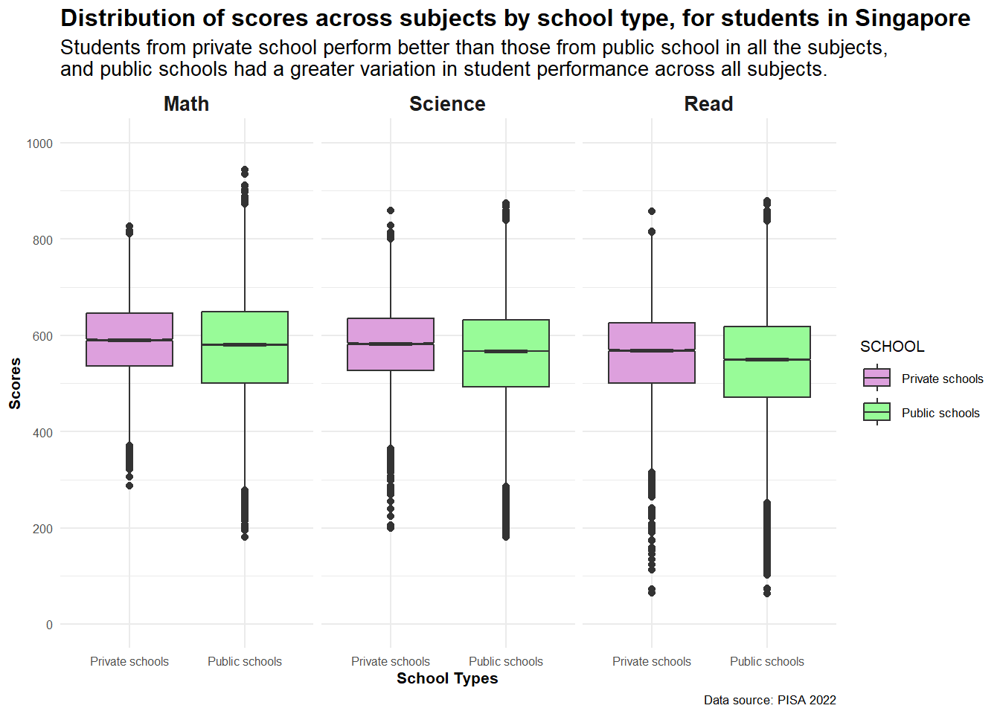
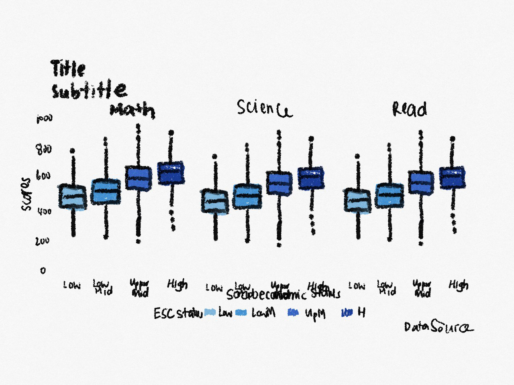
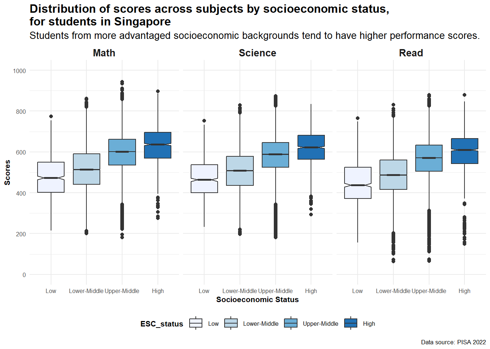

pacman::p_load(tidyverse, haven,
ggrepel, ggthemes,
ggridges, ggdist,
patchwork, ggpattern,
hrbrthemes)Take-home Exercise 2
DataVis Makeover
Overview
In this exercise, we select a peer submission of Take-home Exercise 1. For each visualiation within the submission, we will:
- critique it for clarity and aesthetics,
- present a sketch and the proposed modifications, and
- present the remake of the visualization.
Getting started
Load packages
First, we load packages required:
Import data
Next, we import data. The data used in this exercise is the same as the data used in the Take-home Exercise 1.
We import this dataset as stu_qqq_SG:
stu_qqq_SG <- read_rds("data/stu_qqq_SG.rds")Data pre-processing
Since the focus of the exercise is on critiquing the visualizations, instead of the variable selection or data pre-processing, we will first pre-process the data to a similar format used for the original data visualizations.
This is performed in the code chunk below.
Code
# Select columns relating to this analysis
select_df <- stu_qqq_SG[c(3:4,7,26,1039,1167:1196)]
# Combine 10 PVs for each subject
math_long <- select_df %>%
pivot_longer(
cols = contains("MATH"),
names_to = "MATH",
values_to = "MATH_score"
)
math_long <- math_long %>%
arrange(CNTSCHID, CNTSTUID, STRATUM, ST004D01T, ESCS)
math_long_selected <- select(math_long, -contains("READ"), -contains("SCIE"))
read_long <- select_df %>%
pivot_longer(
cols = contains("READ"),
names_to = "READ",
values_to = "READ_score"
)
read_long <- read_long %>%
arrange(CNTSCHID, CNTSTUID, STRATUM, ST004D01T, ESCS)
read_long_selected <- select(read_long, -contains("MATH"), -contains("SCIE"), -one_of(names(math_long_selected)))
scie_long <- select_df %>%
pivot_longer(
cols = contains("SCIE"),
names_to = "SCIENCE",
values_to = "SCIENCE_score"
)
scie_long <- scie_long %>%
arrange(CNTSCHID, CNTSTUID, STRATUM, ST004D01T, ESCS)
scie_long_selected <- select(scie_long, -contains("MATH"), -contains("READ"), -one_of(names(math_long_selected)))
combined_long_df <- bind_cols(math_long_selected, read_long_selected, scie_long_selected)
# Translate column names and Group ESCS status
school_map <- c("SGP01" = "Public/Secondary",
"SGP02" = "Public/Post-secondary",
"SGP03" = "Private/Secondary",
"SGP97" = "Undisclosed")
gender_map <- c("1" = "Female",
"2" = "Male")
clean_df <- combined_long_df %>%
mutate(SCHOOL = school_map[STRATUM],
GENDER = gender_map[ST004D01T],
Math = as.numeric(MATH_score),
Read = as.numeric(READ_score),
Science = as.numeric(SCIENCE_score),
ESC_status = round(((ESCS - min(ESCS, na.rm = TRUE))/
(max(ESCS, na.rm = TRUE)-min(ESCS, na.rm = TRUE)))*100, digits = 0),
ESC_status = case_when(
ESC_status >= 0 & ESC_status < 25 ~ "Low",
ESC_status >= 25 & ESC_status < 50 ~ "Lower-Middle",
ESC_status >= 50 & ESC_status < 75 ~ "Upper-Middle",
ESC_status >= 75 & ESC_status <= 100 ~ "High",
TRUE ~ as.character(ESC_status)
))
# Remove unused columns
clean_short_df <- clean_df %>%
select(-c(CNTSCHID, STRATUM, ST004D01T, ESCS, MATH_score, READ_score, SCIENCE_score))We will move on to reviewing and remaking the 4 visualizations for the exercise.
Visualization 1: Distribution of Performance on each subject
Original Design
This visualization is intended to show the distribution of performance for each subject. This is done using histograms for each subject, along with annotations to provide some statistical detail.
The original design is shown below.

Critique
Clarity:
Why it is clear:
- The annotations for median, 1st quantile, 3rd quantile and outliers provide additional detail about the distributions that a histogram does not provide.
- Both the X and Y axes start at 0, and the 2D columns are easy to gauge.
Why it can be confusing:
- The “2+1” layout places the three histograms on different Y-axis scales, making it difficult to visually compare the frequency of scores across subjects. Viewers might misinterpret the data, or have to spend extra time interpreting the scales for each histogram correctly.
- The plot title is generic. A more descriptive and meaningful title, supported by a sub-title, would make the message or insight of the visualization clearer.
- The X and Y-axes are not labeled, hence there is no context for what is plotted. With labels, viewers can quickly understand the data without having to make assumptions.
Aesthetics
Why it is beautiful:
- The plots have a simple and clear color scheme, which provides good readability. The grey histograms against a white background with faint grid lines provides a clear contrast, distinguishing the bars easily.
- Each histogram is clearly and consistently labeled with the subject name at the X-axis, helping the viewer to identify the subject matter without ambiguity.
- Different colors were used for the annotations, making these elements stand out and easier for the viewer to identify.
Why it can be ugly:
- The plot title seems to be the same size as the axes label, and is hence not the most prominent element. It should be more prominent than other elements since it provides an overview of the plot.
- The placements of annotations make the numbers difficult to read. Some numbers overlap with the details of the histogram, while others overlap with the ticks on the X-axis.
Sketch
A sketch for the alternative design is shown below.

To improve clarity:
- The histograms are arranged in a single column with the same y-axis scale.
- Titles, subtitles and axis titles are added to provide context to the visual.
- As additional improvement, the X-axis are configured to have labeled major tick marks every 200 units and minor, unlabeled tick marks every 100 units, providing a clear and detailed scale for the axis from 0 to 1000.
To improve aesthetics:
- Font sizes and formatting of titles, subtitles and axis titles have been added to make the visualization look more professional.
- Replace annotations on histogram with annotated boxplots for each subject, so that the statistical details can be more clearly seen.
Remake

# Reshape the data from wide to long format
long_df <- clean_short_df %>%
gather(key = "Subject", value = "Score", c("Math", "Science", "Read"))
# Calculate the quantiles for each subject
quantiles <- long_df %>%
group_by(Subject) %>%
summarise(
Q1 = quantile(Score, probs = 0.25, na.rm = TRUE),
Q3 = quantile(Score, probs = 0.75, na.rm = TRUE),
Median = median(Score, na.rm = TRUE)
)
# Merge the quantiles back into the original long dataframe
long_df <- left_join(long_df, quantiles, by = "Subject")
# Create the plot with facet_wrap
ggplot(data = long_df, aes(x = Score)) +
geom_histogram(bins = 15, color = "grey40", fill = "grey95", linewidth = 0.5) +
geom_boxplot(width = 2000, fill = "white", color = "black",
outlier.colour = "darkgoldenrod1", outlier.fill = "darkgoldenrod1", outlier.size = 1, outlier.alpha = 0.2) +
facet_wrap(~factor(Subject, levels = c("Math", "Science", "Read")), scales = "free", ncol = 1) + # Facet by subject in a single column
geom_vline(data = quantiles, aes(xintercept = Median, group = Subject),
color = "darkred", size = 0.5, linetype = "dashed") +
geom_label(data = quantiles, aes(x = Median, y = 12000, label = paste("Median=", Median)),
color = "darkred", size = 3, hjust = "right") +
geom_segment(data = quantiles, aes(x = Q1, y = 0, xend = Q1, yend = 3000, group = Subject),
color = "blue", size = 0.5, linetype = "dashed") + # Draw line for Q1
geom_label(data = quantiles, aes(x = Q1, y = 3000, label = paste("Q1=", Q1), group = Subject),
fill = "white", color = "navyblue", fontface = "bold", size = 2.5, hjust = "right") +
geom_segment(data = quantiles, aes(x = Q3, y = 0, xend = Q3, yend = 3000, group = Subject),
color = "blue", size = 0.5, linetype = "dashed") + # Draw line for Q3
geom_label(data = quantiles, aes(x = Q3, y = 3000, label = paste("Q3=", Q3), group = Subject),
fill = "white", color = "navyblue", fontface = "bold", size = 2.5, hjust = "left") +
coord_cartesian(xlim = c(0, 1000)) +
scale_x_continuous(breaks=seq(0, 1000, by=200),
minor_breaks=seq(0, 1000, by=100)) +
labs(title = "Distribution of scores by subject for students in Singapore",
subtitle = "Most students performed well in math, followed by science, then reading.\nAll the distribution of performance shows relatively normal, without significant skewness.",
x = "Scores",
y = "Number of Students",
caption = "Data source: PISA 2022") +
theme_minimal(base_size = 8) +
theme(plot.title = element_text(size = 12, face = "bold"),
strip.text = element_text(size = 10, face = "bold"),
axis.title = element_text(size = 8, face = "bold"),
axis.text = element_text(size = 6))Visualization 2: Relationship b/w Gender and Performance
Original Design
This visualization is intended to showcase the relationship between gender and performance for each subject. This is done using density plots for each subject, colouring the overlapping density plots by gender
The original design is shown below.

Critique
Clarity:
Why it is clear:
- The use of different colors to represent different genders helps viewers to quickly identify which curve corresponds to which gender. Moreover, the legend clearly communicates the meaning of the colors, ensuring that there is no confusion about which color corresponds to which gender.
- For the Math plot, the striped pattern fill draws attention to the areas where there is a notable difference between genders.
- For the Math plot, the text annotations clearly point out key findings, such as which gender leads in mid or high scores.
- The X and Y axes are clearly labeled with the subjects being compared (Science, Read, Math), and the y-axis is labeled with ‘Density’, which indicates the probability distribution of the scores.
Why it can be confusing:
- The “2+1” layout places the three density plots on different Y-axis scales, making it difficult to visually compare across subjects.
- The plot title is generic and does not capture the relationship between gender and performance.
- The plot only uses the striped pattern for highlighting gender differences in the Math scores, but not for Science and Read. Consistency in design across all comparisons would provide a clearer and more cohesive visual message.
Aesthetics
Why it is beautiful:
- The plots have a simple and clear color scheme, which provides good readability. The colored density plots against a white background with faint grid lines provides a clear contrast. The choice of contrasting colors in representing genders are intuitive.
- The X and Y axes of each plot is clearly and consistently labeled.
- The annotations are highlighted with colors that match those assigned to each gender, creating a visual connection that shows relevance of these elements to their respective genders.
Why it can be ugly:
- The plot title seems to be the same size as the axes label, and is hence not the most prominent element. It should be more prominent than other elements since it provides an overview of the plot.
Sketch
A sketch for the alternative design is shown below.

To improve clarity:
- The density plots are arranged in a single column with the same Y-axis scale.
- Titles, subtitles and axis titles are added to provide context to the visual.
- As additional improvement, the X-axis are configured to have labeled major tick marks every 200 units and minor, unlabeled tick marks every 100 units, providing a clear and detailed scale for the axis from 0 to 1000.
- Removal of the striped pattern to show gender differences between distributions. The color of the distribution is clear enough in showing which distribution is higher.
To improve aesthetics:
- Font sizes and formatting of titles, subtitles and axis titles have been added to make the visualization look more professional.
- Replace annotations on plot with a descriptive title so that the visualization would not look cluttered with annotations for each density plot.
Remake

# Calculate densities for each subject and gender
densities <- list()
subjects <- c("Math", "Read", "Science")
genders <- c("Female", "Male")
for(subject in subjects) {
for(gender in genders) {
key <- paste(subject, gender, sep = "_")
densities[[key]] <- density(clean_short_df[[subject]][clean_short_df$GENDER == gender], n = 512)
}
}
# Create a data frame for shaded areas where one gender's density is higher than the other
ribbon_data <- list()
for(subject in subjects) {
female_key <- paste(subject, "Female", sep = "_")
male_key <- paste(subject, "Male", sep = "_")
# Create a comparison to find where female density is greater than male density
female_greater <- densities[[female_key]]$y > densities[[male_key]]$y
male_greater <- densities[[male_key]]$y > densities[[female_key]]$y
ribbon_data[[subject]] <- data.frame(
x = densities[[female_key]]$x,
ymin = ifelse(female_greater, densities[[male_key]]$y, densities[[female_key]]$y),
ymax = ifelse(female_greater, densities[[female_key]]$y, densities[[male_key]]$y),
gender = ifelse(female_greater, "Female", "Male")
)
}
# Bind all ribbon data together
ribbon_data <- do.call(rbind, ribbon_data)
ribbon_data$Subject <- factor(rep(subjects, each = length(densities[[paste(subjects[1], genders[1], sep = "_")]]$x)), levels = subjects)
# Reshape the original data from wide to long format
long_df <- clean_short_df %>%
pivot_longer(cols = c("Math", "Read", "Science"), names_to = "Subject", values_to = "Score")
# Plot with facet_wrap
ggplot(data = long_df, aes(x = Score, fill = GENDER)) +
geom_density(alpha = 0.4) +
geom_ribbon(data = ribbon_data, aes(x = x, ymin = ymin, ymax = ymax, fill = gender), alpha = 0.6) +
facet_wrap(~factor(Subject, levels = c("Math", "Science", "Read")), scales = "free_x", ncol = 1) + # Facet by subject in a single column
scale_fill_manual(values = c("Male" = "skyblue3","Female" = "lightpink")) +
coord_cartesian(xlim = c(0, 1000), ylim = c(0, 0.005)) +
scale_x_continuous(breaks = seq(0, 1000, by = 200), minor_breaks = seq(0, 1000, by = 100)) +
labs(title = "Distribution of scores across subjects by gender, for students in Singapore",
subtitle = "Male students generally had higher scores for math and science,\nwhile females generally had higher scores in reading.",
x = "Scores",
y = "Density",
caption = "Data source: PISA 2022") +
theme_minimal(base_size = 8) +
theme(plot.title = element_text(size = 12, face = "bold"),
plot.subtitle = element_text(size = 10),
strip.text = element_text(size = 10, face = "bold"),
axis.title = element_text(size = 8, face = "bold"),
axis.text = element_text(size = 6))Visualization 3: Relationship b/w school types and performance
Original Design
This visualization is intended to showcase the relationship between school type and performance for each subject. For each subject, two boxplots representing the two types of school (public and private) are plotted.
The original design is shown below.

Critique
Clarity:
Why it is clear:
- The layout is consistent across the three plots of the subjects, which facilitates quick comparison across the same two categories of school type (Private/Secondary vs. Public/Secondary).
- Notches were used to make the differences in median of school types clearer.
- The axes are clearly labeled, with the subjects listed on the y-axis and the school types on the x-axis.
Why it can be confusing:
- The boxplots are on different Y-axis scales, making it difficult to visually compare across subjects or interpret the variation clearly.
- The plot title is generic, and does not convey the relationship between school type and performance.
Aesthetics
Why it is beautiful:
- The plots have a simple and clear color scheme, which provides good readability.
Why it can be ugly:
- The sideways orientation of the titles for each subject (Math, Reading, and Science) is challenging to read and also not prominent.
- The plot title seems to be the same size as the axes label, and is hence not the most prominent element. It should be more prominent than other elements since it provides an overview of the plot.
- Although the boxplots for the two school types are indicated on the X-axis, there was no color or pattern distinction that could help the viewer to differentiate them easily.
Sketch
A sketch for the alternative design is shown below.

To improve clarity:
- The Y-axes of the boxplots are placed on consistent scales starting at 0.
- Titles, subtitles and axis titles are added to provide context to the visual.
- As additional improvement, the Y-axis are configured to have labeled major tick marks every 200 units and minor, unlabeled tick marks every 100 units, providing a clear and detailed scale for the axis from 0 to 1000.
To improve aesthetics:
- The titles for each subject are displayed horizontally to make it easier to read.
- Font sizes and formatting of titles, subtitles and axis titles have been added to make the visualization look more professional.
- The school types are given different colors to make differentiating between the two school types easier.
Remake

# Reshape the data from wide to long format
long_df <- clean_short_df %>%
pivot_longer(cols = c("Math", "Science", "Read"), names_to = "Subject", values_to = "Score") %>%
mutate(SCHOOL = recode(SCHOOL,
"Private/Secondary" = "Private schools",
"Public/Secondary" = "Public schools"))
# Plot with facet_wrap ensuring the same y-axis scale
ggplot(data = long_df, aes(y = Score, x = SCHOOL, fill = SCHOOL)) +
geom_boxplot(notch = TRUE) +
facet_wrap(~factor(Subject, levels = c("Math", "Science", "Read")), scales = "free_x") + # Facet by subject in a single column. free_x allows different x-axis per facet (for different school types)
coord_cartesian(ylim = c(0, 1000)) +
scale_y_continuous(breaks=seq(0, 1000, by=200),
minor_breaks=seq(0, 1000, by=100)) +
scale_fill_manual(values = c("Private schools" = "plum", "Public schools" = "palegreen")) +
labs(title = "Distribution of scores across subjects by school type, for students in Singapore",
subtitle = "Students from private school perform better than those from public school in all the subjects,\nand public schools had a greater variation in student performance across all subjects.",
x = "School Types",
y = "Scores",
caption = "Data source: PISA 2022") +
theme_minimal(base_size = 8) +
theme(plot.title = element_text(size = 12, face = "bold"),
plot.subtitle = element_text(size = 10),
strip.text = element_text(size = 10, face = "bold"),
axis.title = element_text(size = 8, face = "bold"),
axis.text = element_text(size = 6))Visualization 4: Relationship b/w socioeconomic status and performance
Original Design
This visualization is intended to showcase the relationship between socioeconomic status and performance for each subject.
The original design is shown below.

Critique
Clarity:
Why it is clear:
- Placing the boxplots for each subject in a single row allows viewers to easily compare the categories side-by-side.
Why it can be confusing:
- The order of the categorical variables is not intuitive or sorted, since it goes from High -> Low -> Lower-Middle -> Upper-Middle.
- The scale for Y-axis is inconsistent across the plots. This makes comparing across the subjects inaccurate.
- The plot title is generic and does not convey the implications of the ESC status on performance.
Aesthetics
Why it is beautiful:
- The design of boxplots for each category and for the subjects is consistent.
Why it can be ugly:
- The sideways orientation of the titles for each subject (Math, Reading, and Science) is challenging to read and also not prominent.
- The X-axis title is flushed to the left of the plot, which seems disconnected from the categories that it labels.
- The boxplots do not use color or shading to differentiate between the ESCS statuses. Using different colors or patterns could help distinguish the groups more clearly.
- The plot title seems to be the same size as the axes label, and is hence not the most prominent element. It should be more prominent than other elements since it provides an overview of the plot.
Sketch
A sketch for the alternative design is shown below.

To improve clarity:
- The categorical variables for ESC status are ordered, making the plot more intuitive while also helping to clearly communicate the influence of status on performance.
- The Y-axes of the boxplots are placed on consistent scales starting at 0.
- Titles, subtitles and axis titles are added to provide context to the visual.
- As additional improvement, the Y-axis are configured to have labeled major tick marks every 200 units and minor, unlabeled tick marks every 100 units, providing a clear and detailed scale for the axis from 0 to 1000.
To improve aesthetics:
- The titles for each subject are displayed horizontally to make it easier to read.
- The X-axis title is centered on the plot to show that the title pertains to the data directly above it.
- The ESC statuses are given different colors to make differentiating between the statuses easier. Additionally choosing the same colour in different hues helps to convey the order of the ESC statuses.
- Font sizes and formatting of titles, subtitles and axis titles have been added to make the visualization look more professional.
Remake
# Reshape the data from wide to long format
long_df <- na.omit(clean_short_df) %>%
pivot_longer(cols = c("Math", "Read", "Science"), names_to = "Subject", values_to = "Scores")
# Order the ESC_status factor in the desired order
long_df$ESC_status <- factor(long_df$ESC_status, levels = c("Low", "Lower-Middle", "Upper-Middle", "High"))
# Plot with facet_wrap for all three subjects
ggplot(data = long_df, aes(y = Scores, x = ESC_status, fill = ESC_status)) +
geom_boxplot(notch = TRUE) +
facet_wrap(~factor(Subject, levels = c("Math", "Science", "Read")), scales = "free_x") +
scale_fill_brewer(palette = "Blues") + # Adds color to the boxplots
coord_cartesian(ylim = c(0, 1000)) +
scale_y_continuous(breaks=seq(0, 1000, by=200),
minor_breaks=seq(0, 1000, by=100)) +
labs(title = "Distribution of scores across subjects by socioeconomic status,\nfor students in Singapore",
subtitle = "Students from more advantaged socioeconomic backgrounds tend to have higher performance scores.",
x = "Socioeconomic Status",
y = "Scores",
caption = "Data source: PISA 2022") +
theme_minimal(base_size = 8) +
theme(plot.title = element_text(size = 12, face = "bold"),
plot.subtitle = element_text(size = 10),
strip.text = element_text(size = 10, face = "bold"),
axis.title = element_text(size = 8, face = "bold"),
axis.text = element_text(size = 6),
legend.position = "bottom",
legend.title = element_text(face = "bold")) 
# Reshape the data from wide to long format
long_df <- na.omit(clean_short_df) %>%
pivot_longer(cols = c("Math", "Read", "Science"), names_to = "Subject", values_to = "Scores")
# Order the ESC_status factor in the desired order
long_df$ESC_status <- factor(long_df$ESC_status, levels = c("Low", "Lower-Middle", "Upper-Middle", "High"))
# Plot with facet_wrap for all three subjects
ggplot(data = long_df, aes(y = Scores, x = ESC_status, fill = ESC_status)) +
geom_boxplot(notch = TRUE) +
facet_wrap(~factor(Subject, levels = c("Math", "Science", "Read")), scales = "free_x") +
scale_fill_brewer(palette = "Blues") + # Adds color to the boxplots
coord_cartesian(ylim = c(0, 1000)) +
scale_y_continuous(breaks=seq(0, 1000, by=200),
minor_breaks=seq(0, 1000, by=100)) +
labs(title = "Distribution of scores across subjects by socioeconomic status,\nfor students in Singapore",
subtitle = "Students from more advantaged socioeconomic backgrounds tend to have higher performance scores.",
x = "Socioeconomic Status",
y = "Scores",
caption = "Data source: PISA 2022") +
theme_minimal(base_size = 8) +
theme(plot.title = element_text(size = 12, face = "bold"),
plot.subtitle = element_text(size = 10),
strip.text = element_text(size = 10, face = "bold"),
axis.title = element_text(size = 8, face = "bold"),
axis.text = element_text(size = 6),
legend.position = "bottom",
legend.title = element_text(face = "bold")) Summary and conclusion
In this exercise, we performed the first peer data visualization makeover. Focusing on the clarity and aesthetics while looking at my peer’s visualizations made me more aware of details such as hierarchy of visual elements (e.g. titles should draw readers’ attention), being intuitive in designing visualizations (e.g. categorical variables should be ordered in a sensible way). I better understand the impact of thoughtful design on making visualizations compelling, clear and aesthetically pleasing. It also sharpened my skills in using the relevant libraries for making visualizations.